Jonathan MirCha - @jonmircha
Jonathan MirCha - @jonmircha
Curso JS Avanzado: Paradigmas de Programación
Curso JavaScript Avanzado
Paradigmas de Programación
de EDteam por @jonmircha
Paradigmas de Programación
Programación
Entendiendo lo qué es
La gente cree que programar es dificil
Algunas razones:
La programación es:
Definición:


PROGRAMAR es el FLUJO de ALGO que se PROCESA, se TRANSFORMA y TERMINA de OTRO MODO
Recomendaciones:
PROGRAMAR ES
FLUJO Y NO PROCESOS
PROGRAMAR ES COMO COCINAR... UNA RECETA

Figuras de los Diagramas de Flujo
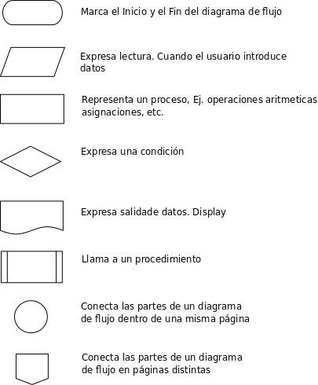¿Cómo determino si un número dado, es par o impar?
Algoritmo:
Diagrama de Flujo:

Código en JavaScript Front end (Navegadores)
function parImpar() {
let numero = prompt('Ingresa un número'),
modulo = numero % 2,
par = `El número: ${numero} es Par`,
impar = `El número: ${numero} es Impar`
return (modulo === 0) ? par : impar
}
parImpar()
Código en JavaScript Back end (Node.js)
function parImpar() {
process.stdout.write('Ingresa un número: ')
process.stdin.once('data', numero => {
let modulo = numero % 2,
par = `El número: ${numero} es Par`,
impar = `El número: ${numero} es Impar`,
residuo = (modulo === 1) ? impar : par
process.stdout.write(residuo)
process.exit()
})
}
parImpar()
¿Qué es un paradigma?
Definición:
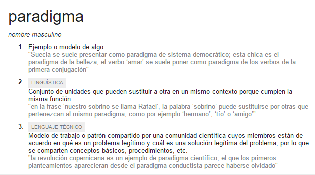
Modelo, Ejemplo, Patrón
No confundir con Patrones de Diseño
Tipos de Programación
(Manera de abstraer el flujo de datos)
Formas de Programación
Programación
Imperativa vs Declarativa
Imperativa vs Declarativa
Imperativa vs Declarativa
while, for y loopmap, reduce y filterImperativa vs Declarativa
Programación
Síncrona vs Asíncrona
Síncrona vs Asíncrona
Síncrona vs Asíncrona
Comensales vs Meseros
Síncrona vs Asíncrona
Abriendo un Archivo
Bloqueante
No Bloqueante
JavaScript y su contexto actual
"Es el único lenguaje en el que me doy cuenta que las personas sienten que no necesitan aprenderlo antes de empezar a utilizarlo."
Douglas Crockford
¿Por qué?
 Fuente
Fuente
Definición
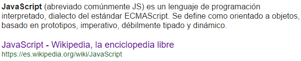"JavaScript, conocido como LiveScript, JScript, ECMAScript, es uno de los lenguajes de programación más populares del mundo. Virtualmente cada computadora en el mundo tiene al menos un intérprete JavaScript instalado y sin duda es usado frecuentemente (navegador web). La popularidad que tiene JavaScript se debe enteramente a su rol como lenguaje de script en la Web. A pesar de su popularidad, pocos saben que JavaScript es un lenguaje de programación dinámico, orientado a objetos y de propósito general."
CROCKFORD, Douglas. Javascript: The World’s Most Misunderstood Programming Language, 2001
Eras JavaScript
Considera lo siguiente:
Los Inicios (1995)
JavaScript NO es Java

JavaScript NO es Java

JavaScript NO es Java

Era Flash (2000)
Era HTML5 (2008)

Era Componentes Web y Notificaciones en Tiempo Real (2014)
Hoy JavaScript, es el único lenguaje capaz de ejecutarse en las 3 capas de una aplicación:
( ISOMORFISMO )
Era Componentes Web y Notificaciones en Tiempo Real (2014)
JavaScript hoy nos permite crear:
Definición
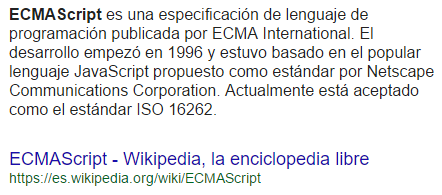El Estándar EcmaScript
| Edición | Publicación | Cambios |
|---|---|---|
| 1 | 1997 | Primera edición |
| 2 | 1998 | Cambios editorales para mentener la especificación completa alineada con el estándar internacional ISO/IEC 16262 |
| 3 | 1999 | Se agregaron expresiones regulares, mejor manejo de strings, nuevo control de declaraciones, manejo de excepciones con try/catch, definición más estricta de errores, formato para la salida numérica y otras mejoras |
| 4 | Abandonado | La cuarta edición fue abandonada debido a diferencias políticas respecto a la complejidad del lenguaje. Muchas características propuestas para la cuarta edición fueron completamente abandonadas; algunas fueron propuestas para la edición ECMAScript Harmony |
| 5 | 2009 | Agrega el modo estricto strict mode, un subconjunto destinado a proporcionar una mejor comprobación de errores y evitar constructores propensos a errores. Aclara varias ambigüedades de la tercera edición, y afina el comportamiento de las implementaciones del “mundo real” que difieren consistentemente desde esa especificación. Agrega algunas nuevas características, como getters y setters, librería para el soporte de JSON, y una más completa reflexión sobre las propiedades de los objetos |
| 5.1 | 2011 | Está completamente alineada con la tercera edición del estándar internacional ISO/IEC 16262:2011 |
| 6 | 2015 | La sexta edición agrega cambios significativos en la sintaxis para escribir aplicaciones complejas, incluyendo clases y módulos, definiéndolos sémanticamente en los mismos términos del modo estricto de la edición ECMAScript 5. Otras nuevas características incluyen iteradores for/of loops, generadores y generador de expresiones estilo Python, funciones de dirección, datos binarios, colecciones (mapas, sets, mapas débiles), y proxies (metaprogramación para objetos virtuales y wrappers). Al ser la primera especificación “ECMAScript Harmony”, es también conocida como “ES6 Harmony” |
| 7 | En progreso | La séptima edición está orientada a continuar con la reforma del lenguaje, aislamiento de códigos, control de efectos y librerías/herramientas habilitadas desde ES6. Nuevas características propuestas incluyen promesas/concurrencia, matemáticas y datos numéricos mejorados, guards y trademarks (una alternativa al tipado estático), sobrecarga de operadores, value types (first-class number-like objects), nuevas estructuras de registro (registros, tuplas y vectores tipados), pattern matching, y traits |
Recursos EcmaScript
Gramática JavaScript
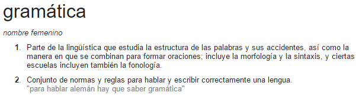La gramática se define como el estudio de las reglas y principios que estandarizan el uso del lenguaje dentro de la oración
Si llevamos este término a la programación podríamos entender el concepto de la gramática como las reglas y principios que regulan la escritura del código
No sólo es el hecho de escribir código como se nos dé la gana, debemos escribir código que sea entendible y ordenado
No importa cuantas personas haya detrás del código, debe leérse como si una sóla persona lo haya escrito
Nomenclatura del código
snake_case
js_style_guide.js
camelCase
const myObj = {}const myNum = 1const myMap = new Map()function myFn() {}
Nomenclatura del código
PascalCase
class MyClass {}function MyClass() {}UPPER_CASE
const MY_CONSTANT = 1Palabras reservadas
A: abstract
B: boolean, break, byte
C: case, catch, char, class, const, continue
D: debugger, default, delete, do, double
E: else, enum, export, extends
F: false, final, finally, float, for, function
G: goto
I: if, implements, import, in, instanceof, int, interface
L: long
N: native, new, null
P: package, private, protected, public
R: return
S: short, static, super, switch, synchronized
T: this, throw, throws, transient, true, try, typeof
V: var, volatile, void
W: while, with
Ordenamiento de Código
Guías de Estilo
Usa Vanilla JS (JavaScript Puro)
Aprende JavaScript
Guías de primera mano
Aprende en serio
Las buenas partes de JavaScript
(las viejas y las nuevas)
Orientado a Objetos
Los objetos son una colección de propiedades.
4 Formas de crear objetos en JS:
Funciones como Objetos de Primera Clase
(Functions as First-Class Objects)
Las funciones en JavaScript son objetos de primera clase. Esto significa que las funciones son simplemente un tipo de objeto especial, con las cuales se pueden hacer las mismas cosas que cualquier otro objeto podria hacer
Tipado Blando
(Loose Typing)
No es necesario especificar el tipo de dato de una variable al ser declarada, cuando se le asigna un valor, JavaScript detecta el tipo de dato automáticamente
Alcance
(Scoping)
Con ES5 teniamos alcance global y funcional
Después de ES6 tenemos alcance global, funcional y de bloque
Elevación
(Hoisting)
En ejecución, todas las declaraciones var y function son movidas al comienzo de cada función
Es buena práctica declarar todas las variables juntas en la primera línea, con el fín de evitar falsas expectativas
Desde ES6 con let podemos tener variables de bloque y evitar la elevación, por ello ya no deberías usar var
Modo Estrícto
(Strict Mode)
El modo estricto en ES5 es una manera de optar por una forma restringida de JavaScript. El código en modo estricto y en modo no estrícto pueden coexistir
Desde ES6 ya no es necesario
Funciones Anónimas
(Anonymous Functions)
Son declaradas dinámicamente en tiempo de ejecución. Son llamadas anónimas porque no poseen un nombre de la misma manera que las funciones normales
Desde ES6 tenemos las funciones flechas() => { ... }
Funciones de Clausura
(Closure Functions)
Son un patrón de diseño muy utilizado en JavaScript que nos permite mantener privacidad en atributos y métodos. Encapsulan variables y funciones que únicamente serán accesibles si son devueltas con el operador return
Funciones Auto Invocadas
(Immediately-Invoked Functions)
Es un patrón de diseño que produce un scope léxico. Usadas para evitar hoisting, protege el código del ambiente global y simultáneamente permite acceder a los métodos publicos al tiempo que conserva la privacidad en las variables definidas dentro
Tipos de Datos en JavaScript
JavaScript es un lenguaje débilmente tipado. Lo que significa que no se requiere indicar el tipo de dato de cada variable declarada
Todas las variables admiten todos los tipos, y pueden ser reescritas. Es una de las cosas buenas y malas que tiene JavaScript
¿Qué es una variable?
Definición
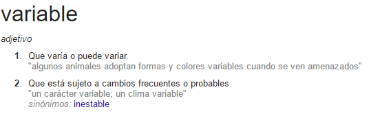Las variables son espacios de memoria donde almacenamos temporalmente datos desde los que podemos acceder en cualquier momento de la ejecución de nuestros programas. Tienen varios tipos y clases.
Tipos de Datos
Programación Orientada a Objetos
Programación Orientada a Objetos
Definición
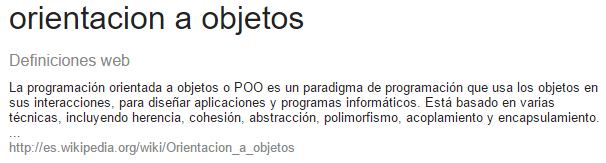La POO trata de plasmar o representar la realidad del mundo físico (lo concreto) y llevarlo al mundo digital (lo abstracto)
Platón: primer programador POO
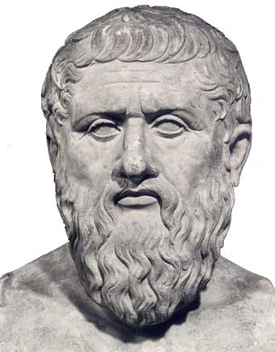WTF!
Platón decía:
Vivimos en el mundo de las ideas, y los objetos son meras representaciones físicas de esas ideas
Tratado de la Teoría de las Ideas
4 Conceptos Básicos de POO
4 Conceptos Básicos de POO
Class Perro {...}kenai = new Perro()4 Conceptos Básicos de POO
Los objetos tienen 2 facultades
objeto.metodo()kenai.comer('croqueta')kenai.ladrar()function ladrar() { ... }function comer(comida) { ... }objeto.atributo = valorkenai.raza = 'Firefox'kenai.edad = 3kenai.esterilizado = truelet nombre = 'kEnAi'Características de la POO
La POO debe guardar ciertas características que la identifican y diferencian de otros paradigmas de programación
Características de la POO
Características de la POO
Entendiendo this en JavaScript
this en JavaScript tiene un comportamiento muy diferente a otros lenguajes de programación, incluso para algunos desarrolladores es considerado uno de los grandes errores de diseño del lenguaje
La clave para entender el comportamiento de this, es tener claro donde se invoca, para saber qué objeto le asigna.
newPOO Prototípica en JS
POO Prototípica en JS
Definición

Programación basada en Prototipos
Es un estilo de POO en la que las clases no están presentes y la reutilización de comportamiento (herencia) se lleva a cabo a través de un proceso de decoración de objetos existentes que sirven de prototipos
Programación basada en Prototipos
POO con Clases en JS
POO con Clases en JS
Definición
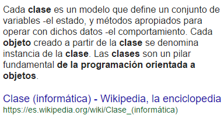Programación basada en Clases
Con la llegada ES6 la definición de una función constructora ha cambiado y nos ofrece la posibilidad de crear clases
Azúcar Sintáctico
Definición
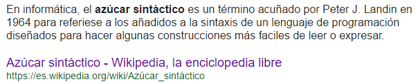Programación basada en Clases
ES6 aporta un 'azúcar sintáctico' para declarar una clase como en la mayoría de los lenguajes POO, pero por debajo sigue siendo una función prototipal
Programación basada en Clases
Programación Asíncrona
¿Qué es Programación Asíncrona?
Establece la capacidad que tienen las operaciones del flujo de un programa para devolver el control de la ejecución al mismo (programa) antes de que hayan terminado sus procesos, mientras siguen operando en segundo plano (procesos u operaciones no bloqueantes)
¿Qué es Programación Asíncrona?
Esto agiliza el proceso de ejecución y permite aumentar la escalabilidad, pero complica el razonamiento sobre el programa
¿Qué NO es Programación Asíncrona?
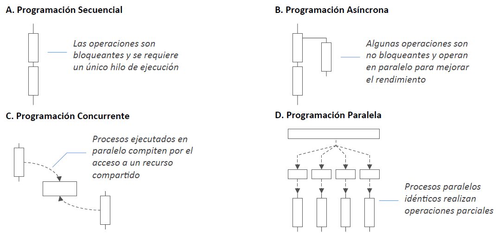Control de flujo asíncrono
async y await)AJAX (Asynchronous JavaScript And XML)
y
JSON (JavaScript Object Notation)
AJAX
Es un API JavaScript para realizar peticiones asíncronas al servidor utilizando XML o JSON
Ajax no es una tecnología en sí mismo. En realidad, se trata de varias tecnologías independientes que se unen
Las tecnologías que forman AJAX son:
Tecnologías que forman AJAX
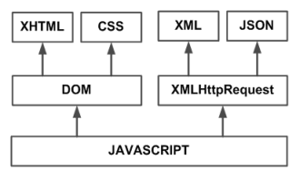Modelo Clásico de la Web VS Modelo AJAX

Flujo Síncrono VS Flujo Asíncrono

Estados de la Petición AJAX
| 0 | UNSET (No se ha llamado al método open) |
| 1 | OPENED (Se ha llamado al método open) |
| 2 | HEADERS_RECEIVED (Se ha llamado al método send) |
| 3 | LOADING (Se está recibiendo la respuesta) |
| 4 | DONE (Se ha completado la operación) |
Considera tambien los códigos de estado HTTP
Más info de AJAX
JSON
Es un formato ligero de intercambio de datos. Leerlo y escribirlo es simple para humanos, y facil de interpretar y generar para las máquinas
Está basado en un subconjunto del Lenguaje de Programación JavaScript, Standard ECMA-262 3rd Edition - Diciembre 1999, creado por Douglas Crockford
JSON
Es independiente del lenguaje pero utiliza convenciones que son ampliamente conocidos por los programadores de la familia de lenguajes C, Java, JavaScript, Perl, Python, y muchos otros
Estas propiedades hacen que JSON sea un lenguaje ideal para el intercambio de datos
JSON
Está constituído por dos estructuras:
Estas son estructuras universales en todos los lenguajes de programación
JSON
Características:
JSON
Sintaxis:
"nombre": "valor"JSON
Valores:
JSON
JSON.stringify()JSON.parse()Programación Funcional
Programación Funcional
Es un viejo conocido del mundo del desarrollo, pero en los últimos años está cogiendo tracción gracias a la emergencia de arquitecturas reactivas, el uso de esquemas funcionales en Big Data y el creciente soporte en diversas plataformas de desarrollo
Programación Funcional
JavaScript ha sido siempre un lenguaje con fuerte tendencia al diseño funcional y desde el surgimiento de Node.js y la filosofía de los paquetes NPM, este paradigma es uno de los más importantes en el lenguaje
Programación Funcional
Usa funciones para:
Programación Funcional
Ayuda a:
Programación Funcional
Beneficios:
Programación Funcional
Se basa en:
Programación Declarativa
La PF se encuentra dentro del conjunto de los lenguajes declarativos
La programación declarativa se basa en indicar el qué debe hacerse a diferencia de la programación imperativa donde se indica el cómo
Veamos un ejemplo...
Programación Declarativa
Código Imperativo para obtener el cuadrado
const numbers = [1, 2, 3, 4, 5]
function squared (numbers) {
let arr = []
for ( let i = 0; i < numbers.length; i++ ) {
arr.push( numbers[i] * numbers[i] )
}
return console.log(arr)
}
squared(numbers)
Programación Declarativa
Código Declarativo para obtener el cuadrado
const numbers = [1, 2, 3, 4, 5]
console.log( numbers.map( num => num * num ) )
Programación Declarativa
Se centra en el uso de expresiones para describir la lógica de un programa sin tener que especificar el flujo o los cambios de estados que se producen, eso se delega en una función
De esta forma obtenemos un código de primer nivel encargado de ir expresando qué necesita hacer
Programación Declarativa
Un ejemplo de programación declarativa es SQL.
SQL es un lenguaje encargado de describir sentencias que indican que colecciones quiero crear, obtener, actualizar o eliminar de una base de datos
En ninguno momento sabemos cual es el mecanismo por el cual los datos son obtenidos
Conseguimos abstraernos por medio de cajas negras, es decir, funciones puras
Funciones Puras
La PF se basa en la premisa de poder construir programas inmutables por medio de pequeños bloques lógicos, las funciones
Y se debe intentar desarrollar funciones lo más puras posibles
Funciones Puras
Una función pura se caracteriza por:
Funciones Puras
let likes = 0
function addLike () {
return ++likes
}
Función impura
Está modificando estados que no se encuentran en su ámbito y hace uso de una variable externa
Funciones Puras
Con JavaScript tenemos que tener mucho cuidado con este tipo de aspecto pues es muy frecuente usar variables de ámbitos padre de una función, por lo que hay que corregir este comportamiento para que consigamos funciones puras
Funciones Puras
function addLike (likes) {
return ++likes
}
addLike( addLike(0) )
Función pura
La función ahora no puede sufrir efectos secundarios porque tiene su estado bajo control, no depende de ningún estado externo
Funciones Puras
Nos ayudan a cometer menos errores y a verificar en todo momento como es el estado antes y después de ejecutar una función
Evitar este tipo de uso, hará que nuestro código sea más robusto y fácil de testear
Funciones Puras
Casos que podrían causar efectos secundarios:
Funciones Puras
Muchos de estos efectos secundarios no se pueden evitar al acceder a aplicaciones reales. Sin embargo, la PF nos ayudará a delimitar y detectar estos casos para que produzcan el menor daño posible
Transparencia Referencial
Otra de las características de las funciones puras
Una función es referencialmente transparente si de manera consistente devuelve los mismos resultados con los mismos datos de entrada
Transparencia Referencial
Si la función depende de estados externos, es complicado que dado unos valores de entrada, siempre devuelva los mismos resultados de salida ya que en el camino, todas esas dependencias pueden cambiar el comportamiento de la función
Inmutabilidad
El mayor número de errores en una aplicación se producen por un mal control de los estados
Que un estado pueda cambiar puede hacer que no obtengamos lo esperado
Por lo tanto controlar los cambios de estados en las aplicaciones es primordial
Inmutabilidad
Una aplicación perfecta sería aquella en la cual no existieran estados y si hubiesen fueran mínimos y controlados lo mejor posibles
Lamentablemente en las aplicaciones reales existen datos que cambian el estado
Lo único que podemos hacer es reducir el número de estados a los indispensables e intentar que sean inmutables
Inmutabilidad
En JavaScript los tipos simples como String, Number o Boolean son tipos inmutables. Cuando se modifica un estado se genera una nueva referencia del dato en memoria
Sin embargo, los Array y los Objetos son mutables. La referencia a su memoria siempre es la misma, si modificamos un atributo o un elemento el puntero continua
Inmutabilidad
Esto puede provocar efectos secundarios ya que si a una función que creemos pura, le pasamos un objeto o array como parámetro, puede que internamente estemos modificando valores internos y que el estado de nuestra aplicación cambie, provocando que se rompa la transparencia referencial
Recursividad
Es una técnica en programación para solucionar problema complejos que pueden dividirse en partes más pequeñas e idénticas al problema total pero de menor magnitud
La composición de todas las soluciones hijas dan el resultado de la solución padre
Recursividad
Suele funcionar autoejecutando funciones con un ámbito menos al problema padre. Es por eso que en toda solución recursiva contamos con 2 elementos:
Recursividad
Caso Base
Es el caso al que toda función recursiva tiene que acabar llegando para dar por resuelto el caso más simple del problema que se quiere resolver
Si no definimos un caso base dentro de nuestra solución recursiva llamaremos a nuestra función infinitas veces hasta que acabemos con todos los recursos del sistema
Recursividad
Caso Recursivo
Suele ser una función que es capaz de autoinvocarse
La clave de esta autoinvocación es que los elementos que le pasemos tendrán que ser menores que los del problema padre ya que si no nunca podríamos llegar al caso base
Recursividad
Es una técnica muy usada en programación funcional porque nos evita el uso de iteraciones
Se lleva muy bien con estructuras de datos que partan de un nodo raíz y del que vayan colgando diferentes nodos hijos como los Arreglos y los Objetos
Métodos Funcionales
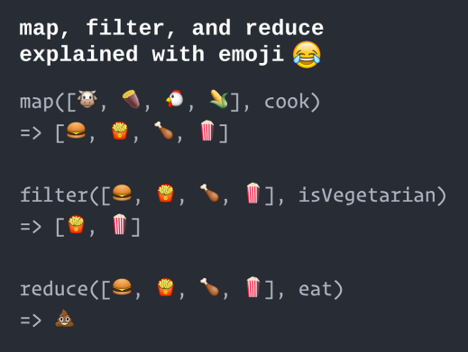Métodos Funcionales
Funciones y Objetos
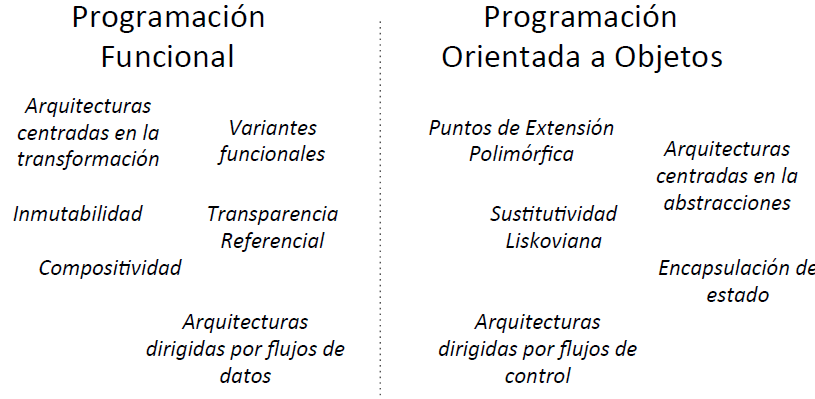Conclusión
La Programación Funcional es un paradigma que usa sintaxis declarativa de funciones puras para crear programas inmutables que eviten efectos secundarios que sean observados externamente, puede convivir con otros paradigmas como la Orientación a Objetos
Cosas en el Tintero
Transductores, Aridad, Tuplas, Currificación, Funtores, Combinadores, Memorización, Mónadas
Aprende más
Programación Reactiva
Es un paradigma de programación orientado a flujos de datos y la propagación de cambios
Programación Reactiva
Es un modelo de programación que pretende dar respuesta a la demanda creciente de nuevos sistemas más flexibles, elásticos y tolerantes a fallos a partir de los principios propios de la programación funcional
Ésto resulta muy ventajosa porque produce desarrollos más declarativos y explícitos centrados en las transformaciones que deben sufrir los datos para su procesamiento
La Web como modelo Reactivo
La Web, como plataforma de interacción, es un sistema reactivo
El DOM representa en memoria el documento de la página que visualiza el navegador y es un modelo de datos sujeto a cambios sobre el que pueden registrarse funciones escuchadoras para cada uno de los eventos que lanza el navegador
La Web como modelo Reactivo
La programación basada en escuchadores es el más básico de los modelos de la Web y es Reactivo
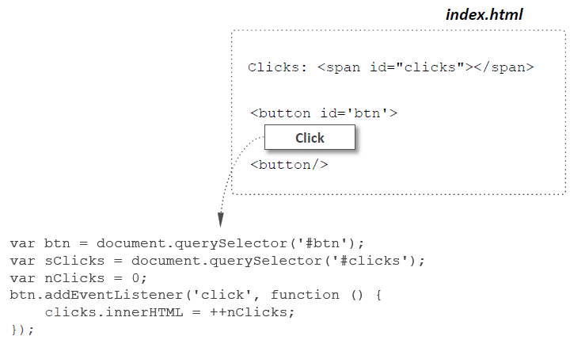El patrón Observador
El paradigma de escuchadores de eventos en JavaScript es la manifestación del patrón de diseño Observador o Pub/Sub
Es un patrón de diseño en el que los objetos se suscriben a un evento y reciben notificaciones cuando éste se produce
El patrón Observador

Este patrón es la piedra angular de la programación orientada a eventos, incluyendo JavaScript
Facilita el buen diseño funcional y orientado a objetos
El patrón Observador
Los objetos que participan en este modelo son:
Arquitecturas Web Reactivas
Son sistemas que operan en reacción a los eventos ocurridos sobre el modelo de datos del DOM
Cada evento atraviesa una cadena de transformación funcional para su procesamiento
Arquitecturas Web Reactivas
Como evolución del modelo de construcción basado en programación de escuchadores, emergieron una serie de arquitecturas que se recogen bajo el acrónimo MV* por sus similitudes entre sí
Todas ellas comparten la premisa de que están centradas en un modelo interno cuyos cambios son atendidos por la vista a través de cierta lógica de control
Arquitecturas Web Reactivas
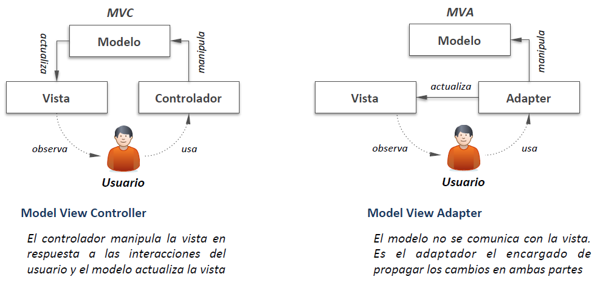Arquitecturas Web Reactivas
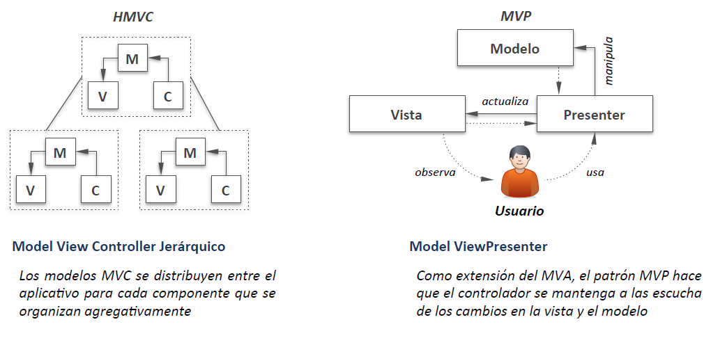Arquitecturas Web Reactivas
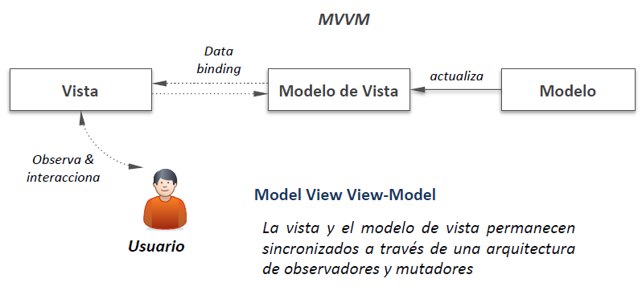Librerías y Frameworks Reactivos
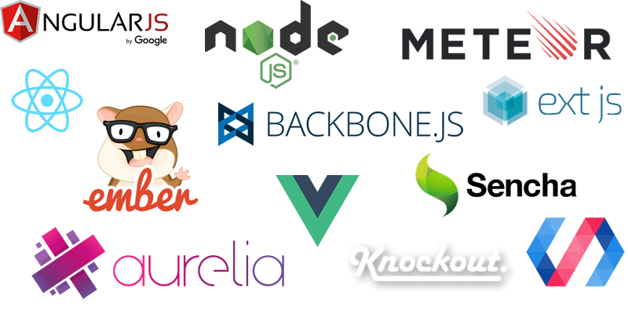Librerías y Frameworks Reactivos
los populares

Librerías y Frameworks Reactivos
Librerías y Frameworks Reactivos
(no tan populares)
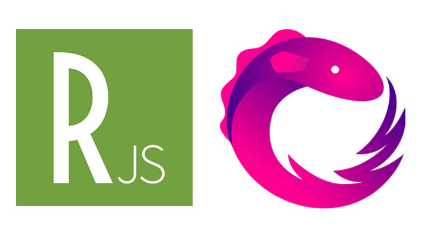Librerías y Frameworks Reactivos
Ractive.js is a template-driven UI library, but unlike other tools that generate inert HTML, it transforms your templates into blueprints for apps that are interactive by default.
The Observer pattern done right. ReactiveX is a combination of the best ideas from the Observer pattern, the Iterator pattern, and functional programming.
RxJS is a library for reactive programming using Observables, to make it easier to compose asynchronous or callback-based code.
Flujo de Trabajo Isomórfico
Flujo de Trabajo Isomórfico
Todo List
Todo List
 🌎 😈
🌎 😈